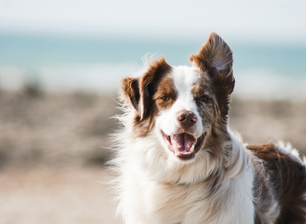
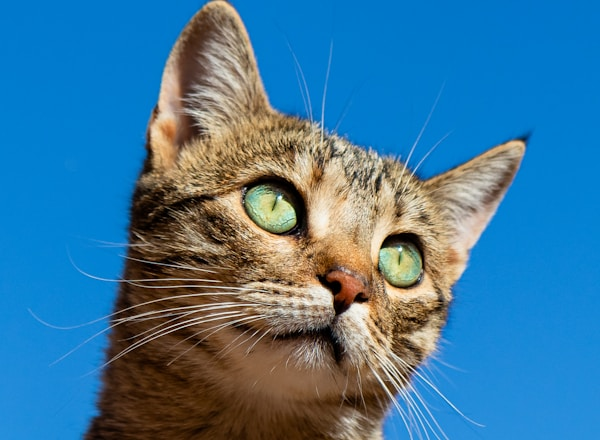
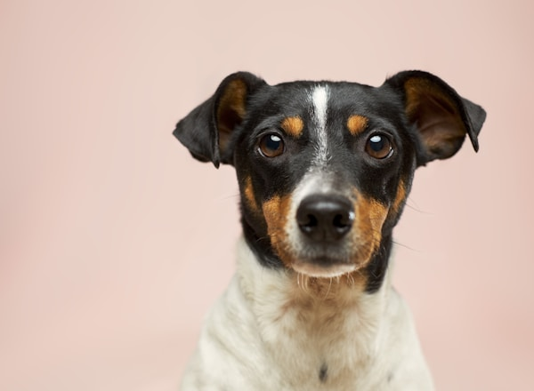
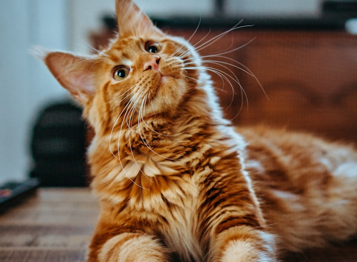
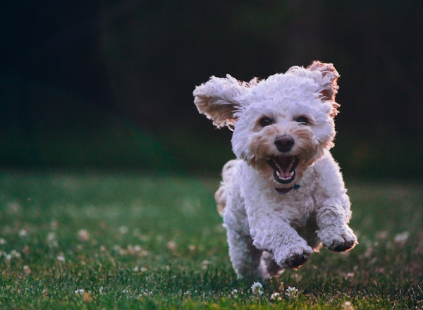
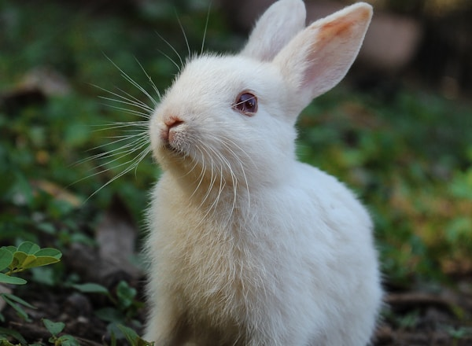

Buddy
Bright, alert, and full of outdoor energy. Buddy loves long walks, playtime, and staying close to his people.
Available Adopt MeBrowse our adorable residents and find a furry companion who's been waiting just for you.
Meet Our Pets
Bright, alert, and full of outdoor energy. Buddy loves long walks, playtime, and staying close to his people.
Available Adopt Me
Curious and confident, Luna loves to observe everything around her and is always ready for her next little adventure.
Available Adopt Me
Smart, watchful, and affectionate once he warms up. Max is a small companion with a big personality.
Adoption Pending
Calm, regal, and very photogenic. Milo enjoys cozy indoor spots and a relaxed daily routine.
Available Adopt Me
Playful and joyful, Daisy loves running in open spaces and bringing happy energy wherever she goes.
Available Adopt Me
Soft, gentle, and curious. Cinnamon is a sweet little rabbit who enjoys calm spaces and gentle handling.
Available Adopt MeFounded in 2018, Paws & Home is a no-kill shelter dedicated to rescuing, rehabilitating, and rehoming animals in need. Every animal in our care receives veterinary attention, socialization, and lots of love while waiting for their forever family.
We've placed over 2,500 pets in loving homes and counting. Whether you're looking for a playful puppy or a mellow senior cat, we'll help you find the perfect match.